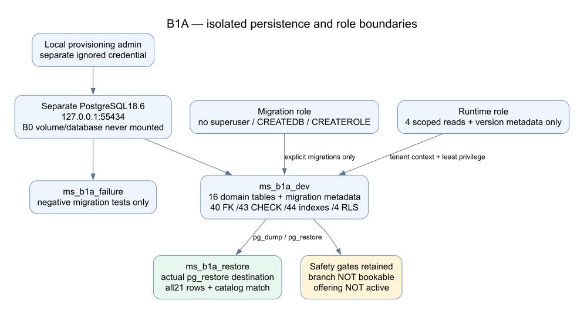
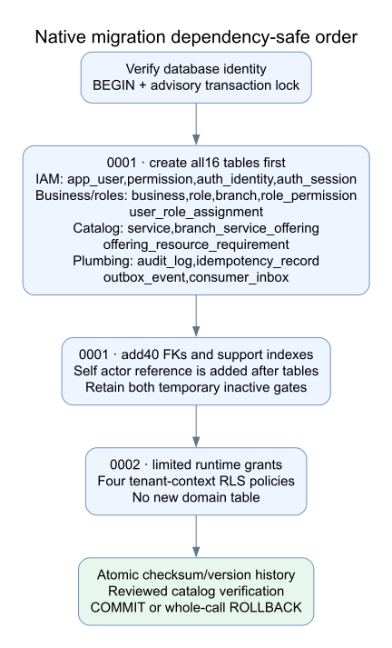
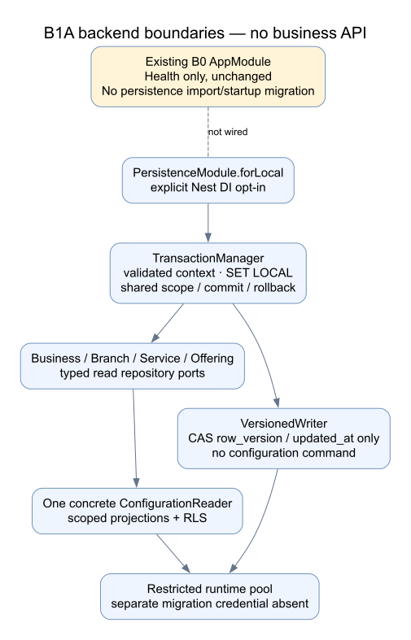
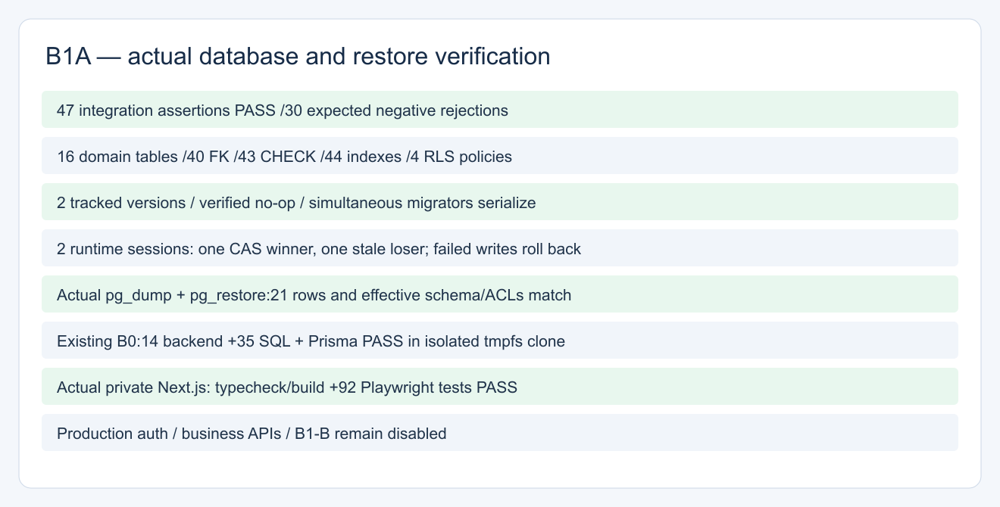
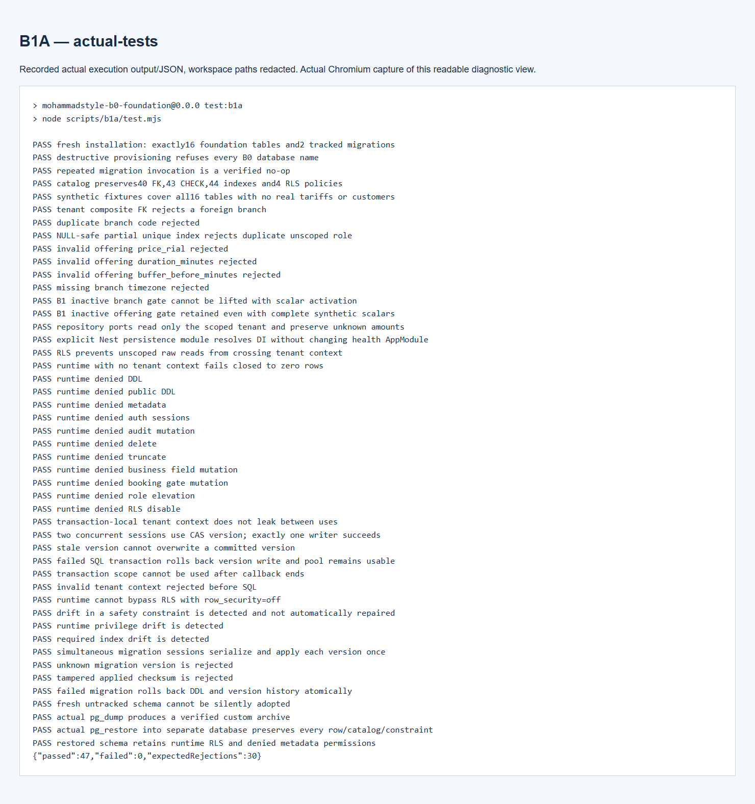
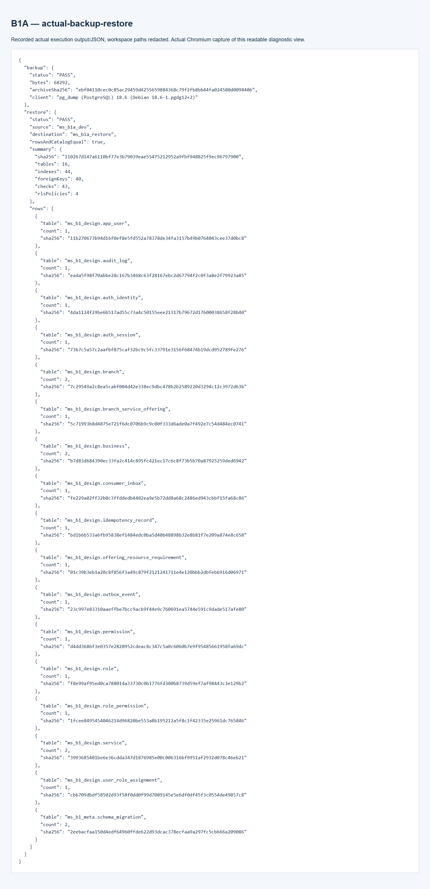
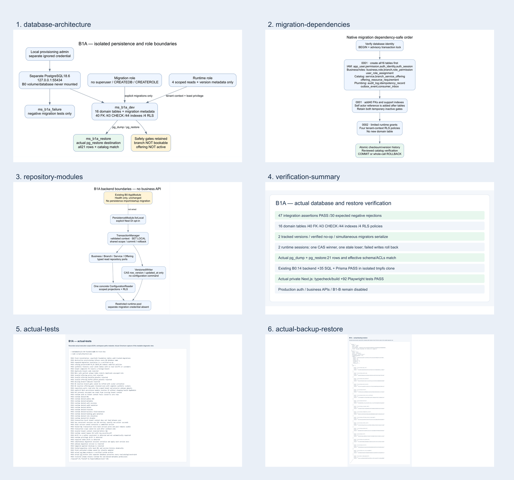

database-architecture
Individual PNG · Zoomable SVG

migration-dependencies
Individual PNG · Zoomable SVG

repository-modules
Individual PNG · Zoomable SVG

verification-summary
Individual PNG · Zoomable SVG

actual-tests
Individual PNG · Recorded diagnostic view

actual-backup-restore
Individual PNG · Recorded diagnostic view

Contact sheet

Stop for B1-A approval before B1-B.